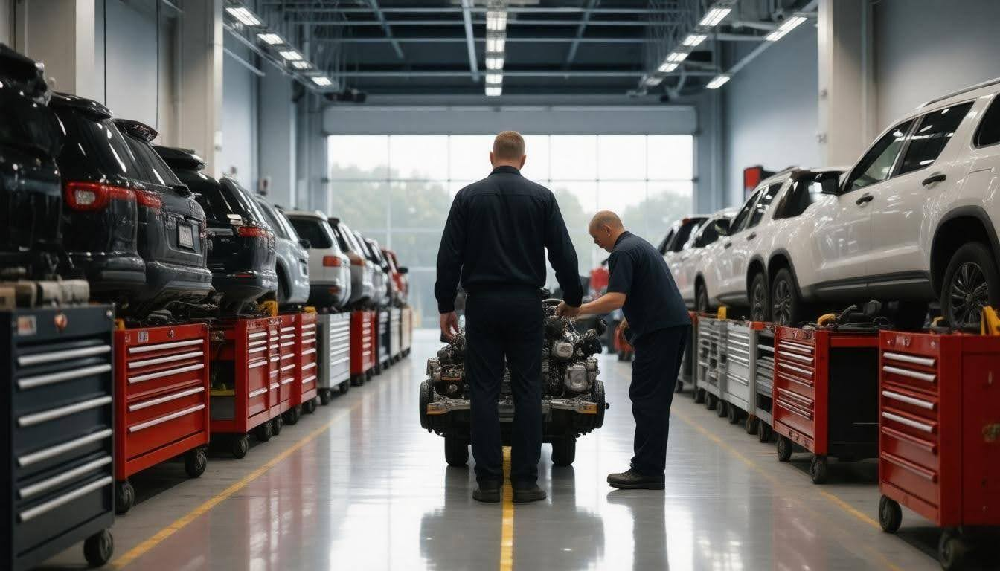

How to Reduce Fleet Maintenance Costs Top Strategies for Savings
Managing a fleet can be challenging, especially when trying to keep maintenance costs under control. You might find yourself wondering how to stretch your budget while ensuring that every vehicle in your fleet is running smoothly and efficiently. Fortunately, there are effective strategies that can help reduce overall expenses without compromising on quality or safety. In this article, we'll explore practical methods to minimize fleet maintenance costs, from implementing proactive maintenance schedules to leveraging advanced technologies, all aimed at keeping your fleet on the road and your bottom line healthy. Whether you're a seasoned fleet manager or just starting out, these tips will guide you on the path to smarter, more cost-effective fleet management.
To reduce fleet maintenance costs, prioritize proactive vehicle maintenance to prevent unscheduled breakdowns, manage driver behavior to minimize wear and tear, and implement fleet tracking technology for better route optimization. Additionally, monitoring fuel efficiency and partnering with connected fleet specialists can provide tailored solutions that further enhance operational efficiency and cost savings.
Preventive and Predictive Maintenance
Preventive maintenance is not just a buzzword; it’s a systematic approach that involves regularly scheduled checkups and servicing of vehicles to prevent unexpected breakdowns. Imagine having your vehicle's health monitored like a regular doctor’s appointment. By doing so, fleet managers can catch potentially costly issues before they spiral out of control. For instance, when you schedule inspections to examine fluid levels, tire treads, brakes, and engine functionality, you’re not merely ticking boxes. You're actively taking steps to extend the life of your vehicles and ensure they run smoothly.
Steps for Implementing Preventive Maintenance
- Schedule Regular Inspections: Establishing a routine inspection protocol is critical. By ensuring checks are conducted at consistent intervals—be it monthly or quarterly—you can pinpoint small issues before they evolve into significant problems. It's akin to maintaining a garden: a little weeding and watering goes a long way in preventing overgrowth.
- Use Detailed Maintenance Logs: Maintaining meticulous records of all services and repairs creates a roadmap of each vehicle's performance history. It provides insights into recurring issues, thereby facilitating informed decision-making about preventive strategies; it becomes essential to chart patterns that could indicate an impending failure.
A logistics company found that by sticking rigorously to a preventive maintenance schedule, they reduced their annual maintenance costs by 20%. They previously faced frequent unexpected breakdowns—especially with brake systems—which were both expensive and disruptive.
Leveraging Predictive Maintenance
Predictive maintenance takes things up a notch by employing advanced technology, using data gathered through telematics or onboard sensors. This method allows fleet managers to anticipate when components are likely to fail. It's almost like having a crystal ball that tells you exactly when your vehicle needs attention.
- Install Sensors and Telematics: The integration of telematics systems into fleets is revolutionary. By continuously monitoring vehicle health, these systems alert fleet managers in real-time about potential issues—such as engine overheating or low brake fluid levels—allowing immediate action to be taken.
- Analyze Data Trends: Collecting data is only half the battle; the true value lies in analyzing this data effectively. With tools like machine learning algorithms, fleet owners can identify trends indicating impending failures, allowing for timely intervention to avert costly downtime.
Fleet owners utilizing predictive maintenance reported a dramatic 30% drop in unscheduled downtimes yet emphasized that initial investments in telematics technology and staff training were crucial for realizing these benefits.
Adopting preventive and predictive maintenance approaches equips fleet managers with the tools needed for sustained operational excellence. Next, we'll look into further enhancements in fleet operations that bolster efficiency and cost-effectiveness.
Optimizing Fleet Management Practices

Effective fleet management goes beyond just tracking fuel usage or scheduling maintenance; it requires a strategic approach that can unify resources and streamline processes. One of the first measures to implement is to centralize fleet data using robust fleet management software. This type of software consolidates key information about vehicle usage, maintenance schedules, fuel consumption, and driver performance into one accessible platform. In doing so, it allows managers to identify where inefficiencies lie and make informed decisions with real-time data at their fingertips.
Centralization not only aids in pinpointing areas where costs can be cut but also simplifies the scheduling of regular maintenance tasks. For example, when a manager can see all vehicles’ statuses in one dashboard, they can easily prioritize necessary services—helping avoid unscheduled breakdowns that often lead to expensive repairs and downtime. A well-maintained vehicle fleet operates more efficiently and fosters a sense of responsibility among drivers, bolstering safety records while reducing wear and tear.
Following centralized data management, the next crucial strategy revolves around asset utilization.
When your fleet operates at full potential, you reduce unnecessary capital expenses tied to extra vehicles. Understanding how each vehicle in your fleet is being used is critical; for instance, through telematics systems, you can monitor driving habits and ensure that every asset is adequately utilized. If certain vehicles are consistently underutilized, this provides an opportunity to consider whether that unit is genuinely necessary or if it could be redeployed elsewhere for better efficiency.
Additionally, implementing route optimization software plays a vital role in maximizing fleet effectiveness. This technology analyzes various factors—such as traffic patterns, road conditions, and delivery deadlines—to devise the most efficient routes for drivers. By optimizing travel paths, you decrease travel time and cut down on fuel consumption significantly. Fewer hours on the road translate to not just fuel savings but also less wear on your vehicles over time.
Many logistics companies have successfully adopted route optimization and reported improved customer satisfaction alongside a measurable reduction in operational costs.
Despite these potential challenges in integrating these systems initially, the benefits far outweigh any obstacles encountered along the way.
Implementing effective fleet management practices positions businesses to thrive rather than merely survive in increasingly competitive markets. By centralizing data, improving asset utilization, and optimizing routes, fleet operators set themselves up for success—leading to reduced costs and operational efficiency that reflects positively on their bottom line.
With these foundational strategies established, it's essential to explore how advanced technology can further enhance fleet efficiency and drive down costs.
Leveraging Fleet Technology

Modern fleet technology has dramatically transformed the way fleets operate, offering tools that enhance both efficiency and cost-effectiveness. First off, let’s discuss telematics systems. These sophisticated platforms provide real-time data that can be harnessed to monitor vehicle health, track driver behavior, and assess route efficiency. Imagine being able to see at a glance whether a vehicle is overdue for service or if a driver is accelerating too abruptly. With telematics, this level of insight is not just possible—it's standard.
Some may argue that investing in telematics can be costly upfront. However, the long-term savings often speak volumes louder than the initial sticker price. When you factor in the reduced likelihood of major repairs due to early intervention from consistent monitoring, plus the potential for improved fuel efficiencies through optimized routes, the investment pays for itself over time.
Moving forward from telematics, we can address another vital tool: automated maintenance alerts. These advanced software applications can streamline your maintenance schedules by sending timely reminders about services due. This feature prevents simple oversights that could lead to more significant problems down the line.
Consider these key benefits:
- They help ensure compliance with regulatory requirements.
- Automated alerts keep track of both routine maintenance and unexpected repairs.
- They reduce downtime by making sure vehicles are serviced before issues arise.
| Technology | Benefit | Example |
|---|---|---|
| Telematics | Real-Time Monitoring | Instant alerts for engine issues |
| Automated Maintenance Alerts | Timely Service Notifications | No missed services |
| Fuel Management Systems | Improved Efficiency | Reduced fuel consumption |
Utilizing these advanced technologies sets the foundation for a well-oiled machine where you don't just react to problems but proactively prevent them from becoming costly repairs.
By embracing these groundbreaking advancements, you enhance your fleet’s operational efficiency while creating a safer driving environment for your team. This approach allows you to see technology as an integral part of profitability rather than a mere expense.
As we shift our focus, it's essential to consider how effective training and operational improvements play a crucial role in maximizing fleet performance.
Driver Training and Operational Improvements

Drivers are often viewed as the heart and soul of fleet operations because their behaviors directly influence vehicle performance and operational costs. This connection underscores the necessity of effective driver training programs. When drivers learn about fuel-efficient driving practices and proper vehicle handling, the positive impact resonates throughout the entire organization. For example, a focus on smooth acceleration and gentle braking enables drivers to conserve fuel. Minor adjustments in driving style can lead to substantial savings.
Key Areas of Driver Training
When considering how to prioritize training, it is beneficial to start with fuel efficiency. Teaching drivers about maintaining even speeds while driving, avoiding hard stops, and shifting gears appropriately can make a real difference. This training isn't just theoretical; studies have shown that effective driver training can lead to up to 15% fuel savings—substantial sums over time, especially with fluctuating fuel prices being a significant concern for fleet managers.
Equally vital is imparting knowledge about proper vehicle handling. Unaware drivers might overload vehicles or fail to navigate bumpy terrain carefully, which accelerates wear and tear on various components. Educating them on appropriate payloads and best practices for traversing uneven surfaces helps mitigate maintenance costs—these costs typically decrease by about 10% due to reduced wear.
The commitment to continuous education pays off handsomely. A study from the Energy Saving Trust supports these claims by illustrating that fleets implementing structured training programs enjoy reduced fuel consumption and extended vehicle lifespans.
As Mark, a fleet manager at a logistics firm describes it: “After implementing a structured driver training program, we saw a noticeable decrease in both fuel consumption and maintenance costs. Our drivers are more aware of their driving habits now." This reflects what other fleet managers have echoed—the return on investment from such programs is not just palpable; it becomes crucial for navigating increasing operational costs.
Investing in driver training programs extends far beyond promoting safe driving; it forms a comprehensive strategy that safeguards organizational budgets while enhancing overall fleet performance. With market fluctuations and budget constraints looming in 2024, understanding complex factors like parts availability and cost-effective procurement strategies will be vital to sustaining efficiency.
Affordable Parts and Fuel Procurement

The quest for affordability in fleet management goes beyond simply cutting costs; it’s about smart strategies that ensure quality while maximizing savings. One of the most effective methods to achieve this is through bulk purchasing. By acquiring essential parts in larger quantities, you can often negotiate discounts with suppliers. This not only saves money upfront but also establishes a solid relationship with your vendors for future dealings. Think of it as planting seeds in a garden—you'll reap the benefits later when those relationships yield even greater deals.
- Consistent Suppliers: Once you've identified reliable suppliers, make it a priority to consistently engage with them. This loyalty can lead to better pricing and priority access during inventory shortages.
- Collaboration: Teaming up with other fleet operators to buy in bulk could amplify your negotiating power, so consider forming co-op agreements that benefit all involved parties.
Speaking of partnerships, entering into fuel contracts with suppliers can also yield considerable advantages.
Fuel prices are notorious for their volatility, making it challenging to predict monthly expenses. By negotiating fixed-rate contracts or bulk purchasing agreements with your fuel supplier, you can lock in lower rates that protect your fleet from market fluctuations. Imagine waking up one morning to find that diesel prices have spiked, yet your operations continue uninterrupted thanks to your smart pre-planning. This financial foresight acts as a safety net, ensuring that your fleet remains operational without unexpected surcharges cutting into your budget.
Another approach worth considering is the use of aftermarket parts, which can offer a practical alternative to original equipment manufacturer (OEM) options.
While OEM parts carry the brand name and often perceived reliability, high-quality aftermarket parts can provide significant savings without sacrificing performance. Many manufacturers nowadays produce aftermarket components that meet or exceed OEM standards. Sourcing these alternatives allows you to keep maintenance costs down while still maintaining operational integrity. It’s like finding an excellent off-brand product that works just as well—sometimes it might even outperform the name-brand counterpart! A local trucking company made headlines when they reported a 20% reduction in annual maintenance costs after switching entirely to reputable aftermarket brands instead of solely relying on OEM products.
Smart procurement strategies directly impact the bottom line, providing substantial savings across various fleet management aspects. As we explore the next steps beyond purchasing practices, understanding how to monitor and evaluate performance will enhance these cost-saving efforts significantly.
Evaluating and Monitoring Fleet Performance

The evaluation and constant monitoring of fleet performance are critical to identifying areas where costs can be reduced. Imagine being able to pinpoint inefficiencies before they spiral into significant expenses. That's the aim behind monitoring fleet operations meticulously. By focusing on relevant metrics and employing a systematic approach, fleets can unlock new levels of efficiency and cost-effectiveness.
One of the first steps in this process is KPIs Analysis. These Key Performance Indicators serve as your compass in navigating fleet management. Think about metrics like fuel efficiency, maintenance costs, and vehicle uptime. Each of these indicators tells a unique story about how well your fleet operates. For instance, if you notice that a specific vehicle's fuel consumption is notably higher than that of similar models, it may indicate underlying issues requiring attention—be it driving habits or potential mechanical failures.
To fully leverage these insights, regular audits become essential. Conducting systematic reviews of fleet operations ensures adherence to best practices while uncovering cost-saving opportunities. These assessments might cover everything from compliance with safety regulations to verifying proper vehicle usage. Consistent auditing acts like a health check-up for your fleet; neglecting it could lead to overlooked issues that compound over time.
Regular audits can significantly increase accountability among drivers and staff, encouraging adherence to best practices while fostering a culture of improvement.
Another powerful tool in evaluating fleet performance is Benchmarking. This involves comparing your fleet's performance metrics against industry benchmarks. It's like taking a reading from a thermometer; it gives you context on where you stand relative to others in your field. By using reports and analytics from fleet management software, you can monitor progress over time, which is vital for continuous improvement.
Key Metrics Worth Tracking
Here are some key figures worth tracking:
- Fuel Efficiency: Aim to track miles per gallon for each vehicle to identify who’s lagging behind.
- Maintenance Costs: Monitoring these costs per vehicle and per service helps in spotting patterns.
- Downtime: Analyzing the frequency and duration of vehicle downtime aids in assessing operational reliability.
Emily, a fleet manager at a transportation company, shared her experience—"We introduced KPI tracking two years ago, and it has been game-changing. Knowing which vehicles cost more in maintenance helped us replace or retire them ahead of time, further reducing our fleet costs.” Her testimony highlights the tangible benefits of actively engaging with data.
By consistently evaluating and monitoring fleet performance, companies can make data-driven decisions that not only enhance operational efficiency but also lead to sustained cost reductions across the board.
Incorporating these strategies will empower the fleet management process, maximizing savings while improving overall effectiveness in operations.